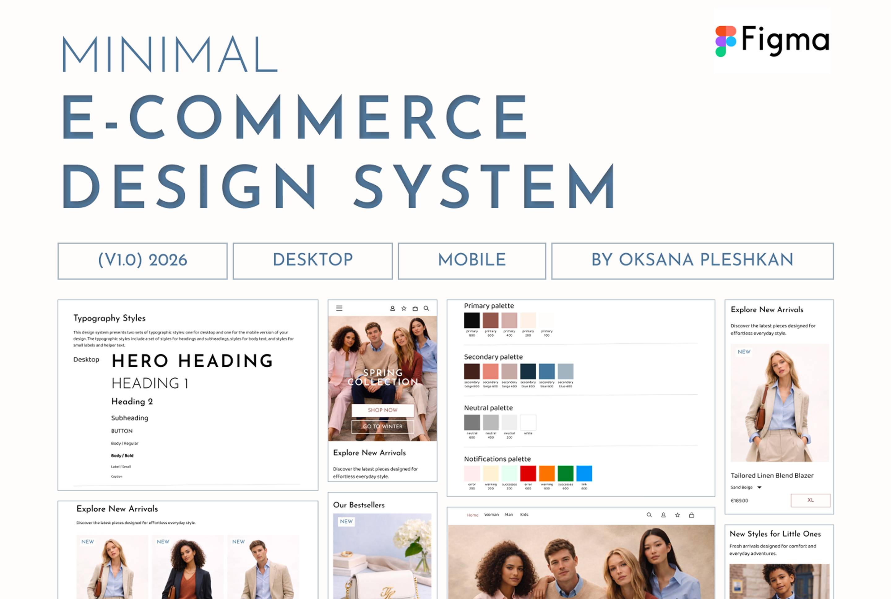
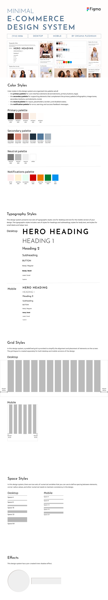
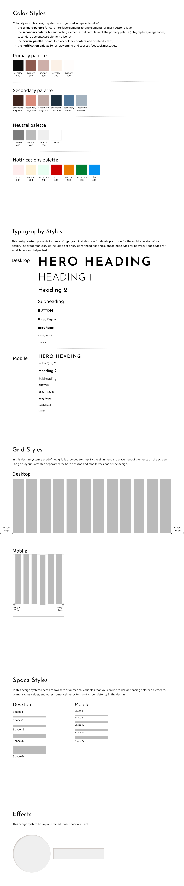
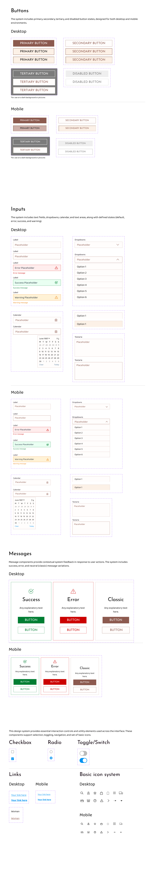
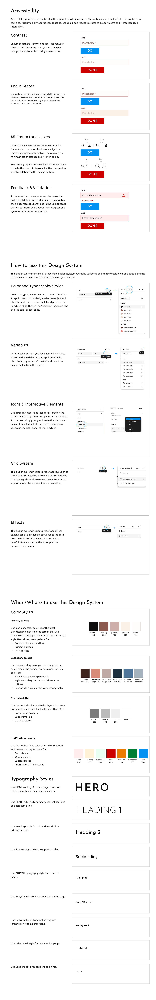

Foundations
Core design styles and tokens used across the system.

This project focused on creating a minimal e-commerce design system for modern online retail interfaces. The goal was to improve consistency, reduce repetitive design work, and support scalable product design across desktop and mobile.
The system included core foundations such as colour, typography, spacing, grids, and effects, along with a reusable library of basic components including buttons, inputs, dropdowns, messages, toggles, and more.
Components were created with built-in variants and interaction states to support quick prototyping. The design system also included accessibility considerations, usage guidance, and an example homepage layout showing how the system can be applied in a real interface.

Core design styles and tokens used across the system.
Reusable UI components with variants and interactive states.
Guidelines explaining how to use the design system correctly.
Example layouts and a space for testing combinations and hierarchy.

The Foundations section contains the core visual styles and tokens used throughout the design system. It helps maintain consistency and makes it easier to build new layouts and components.
The Components section includes a library of reusable UI elements designed for both desktop and mobile. Each component was created with variants and interactive states such as hover, focus, active, and disabled.


The Documentation section explains how to use styles, components, and tokens correctly. It supports designers and developers by making the system easier to understand and apply consistently.
The Playground section contains example layouts and screens built using the design system components and styles. It demonstrates how components, grids, and visual rules can be combined into real interface layouts.
This section also works as a practical testing space for experimenting with layout combinations, hierarchy, and reusable patterns.

This project resulted in a scalable and reusable design system that improves consistency, reduces repetitive design work, and supports faster interface design.